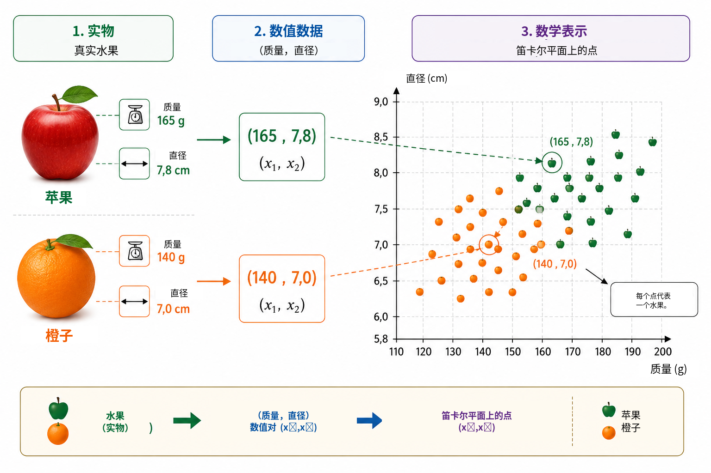
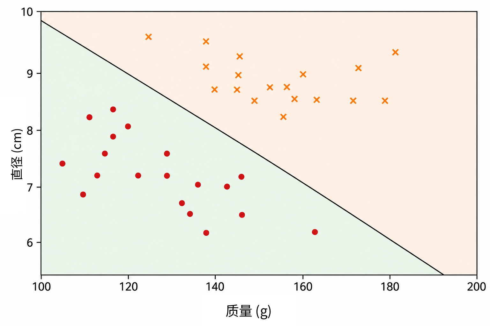
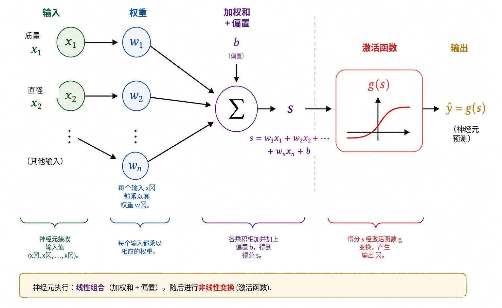
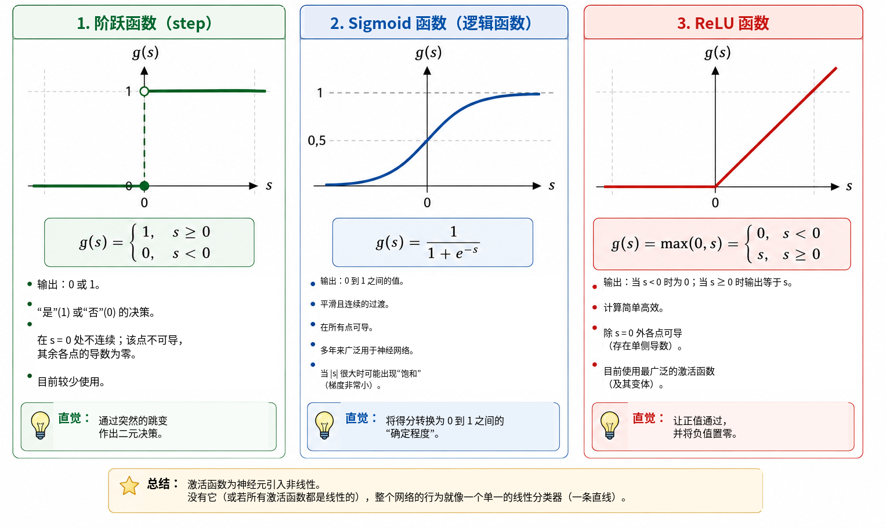
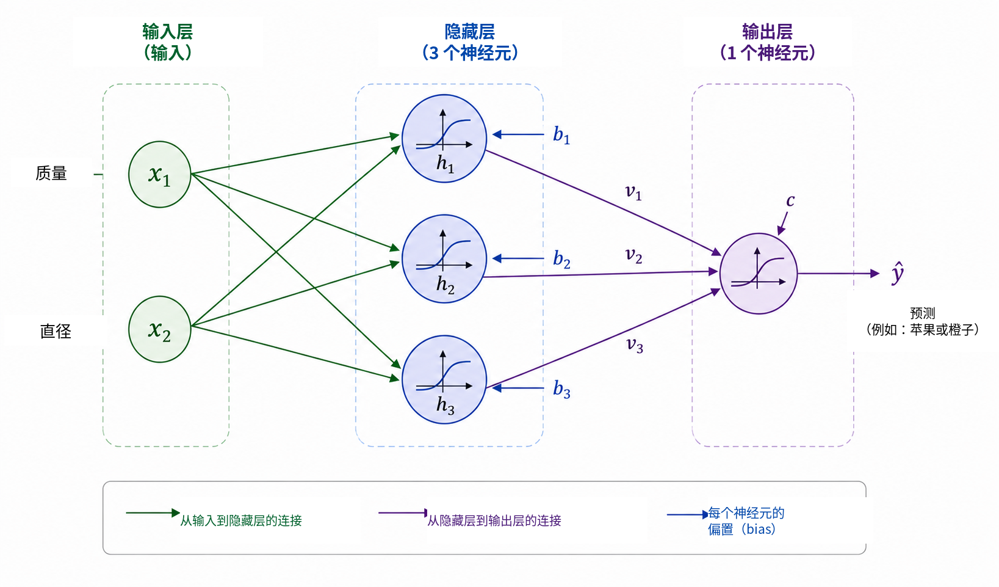
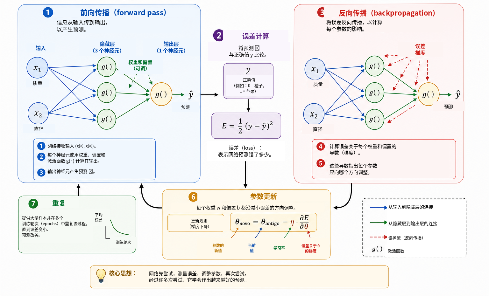
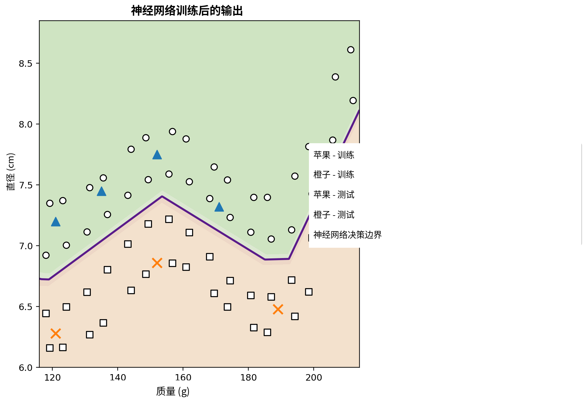

计算机何时能够学习？
在日常生活中，我们几乎在不知不觉中不断作出分类判断。看到一个水果时，我们很快就能判断它是苹果还是橙子；手机收到一条消息时，我们会区分正常对话和不受欢迎的广告；在医学分析中，可以把多项测量结果结合起来辅助决策；在金融机构中，发放信贷之前也会综合评估多种信息。在这些例子里，都是把若干特征放在一起考虑，以得到一个回答。
在许多传统计算机程序中，产生这个回答的规则由程序员明确写出。当规则已知并且能够清楚表述时，这种方法非常有效。然而，当数据变化很大，或者难以事先列出作出良好决策所需的每一个条件时，这种方法就会变得不那么有效。于是自然产生一个问题：
我们能否构造一个程序，使它从样本中学习决策规则，
而不是事先把规则直接交给它？
这正是机器学习的核心思想之一。机器学习是人工智能的一个领域，研究如何利用数据拟合模型 。在监督学习问题中，算法得到一组样本以及每个样本的正确答案，我们希望得到一个模型，使它对训练过程中没有见过的样本也能作出有用的预测。在为这一目的发展出的众多模型中，人工神经网络已经在图像识别、语言处理、信号分析和时间序列预测等应用中占据重要位置 。
Batista 和 Martins 已经在 Professor de Matemática Online 中讨论过神经网络如何成为数学、计算与学校教育之间的桥梁 。他们介绍了一项结合教师教育、Python 和数字识别的活动。本文采取一条互补的路径。我们的主要目标是揭示一个小型神经网络内部的数学结构，从解析几何出发，逐步推进到梯度计算以及反向传播的手工实现。
尽管现代应用可能非常复杂，神经网络的数学核心却可以用相对熟悉的概念来引入。在最基本的层面上，神经网络就是若干函数的复合，而这些函数中的参数根据数据进行调整。我们先从一个简单的几何问题开始，把一条分隔直线重新解释为人工神经元，再连接多个神经元，研究激活函数的作用，并说明如何利用导数自动调整网络参数。随后，我们用 Python 实现一个完整的小型示例，并始终保持方程与代码之间的直接对应关系。
问题的数学表示
为了理解神经网络如何工作，我们从一个有意简化的问题开始：区分苹果和橙子。水果具有许多可用于这项任务的特征，例如颜色、质量、直径、纹理和气味。不过，一个初始数学模型并不需要立即包含全部复杂性。我们只使用两个容易测量的量：以克为单位的质量，以及以厘米为单位的直径。
因此，每个水果用一个有序对表示， \[(x_1,x_2),\] 其中 \[x_1=\text{质量} \qquad\text{且}\qquad x_2=\text{直径}.\]
于是，有序对 \((155,\;7.2)\) 表示一个质量为 \(155\) g、直径为 \(7.2\) cm 的水果。把真实物体替换为两个数值测量后，我们就把每个水果对应到笛卡尔平面中的一个点：第一坐标表示质量，第二坐标表示直径。图 1 用一组假想的苹果和橙子说明了这种表示。

这种转换改变了问题表面上的性质。我们不再直接问“如何识别苹果或橙子”，而是可以提出一个几何问题：如何在平面中把属于两类的点分开？这种视角转换是机器学习中的基本思想。图像、文本、声音和实验信号都必须先转换成数值表示，算法才能处理它们。在我们的例子中，每个对象只有两个坐标；而在真实应用中，一种表示可能包含数百、数千甚至数百万个分量。原理并没有改变：每个样本都对应一组数，模型的任务是寻找一个规则，把这种表示映射到期望的答案。
我们从最简单的几何规则开始，考察是否只用一条直线就能把苹果点和橙子点充分分开。
用一条直线进行分类
当每个水果都已经表示成笛卡尔平面中的一个点之后，分类就变成了一个几何问题：一条直线能否把苹果和橙子分开？这个问题体现了机器学习中一类重要方法的基本思想，这类方法称为线性分类器。
考虑一条穿过数据点云的直线，如图 2 所示。这条直线把平面分成两个半平面。如果大多数苹果点位于一侧，而大多数橙子点位于另一侧，那么一个新水果相对于这条直线的位置就可以用作分类规则。测量其质量和直径后，我们把水果表示成一个点，然后判断该点位于直线的哪一侧。

在笛卡尔平面 \((x_1,x_2)\) 中，一条直线可以写成 \[w_1x_1+w_2x_2+b=0, \qquad (w_1,w_2)\neq(0,0).\]
向量 \((w_1,w_2)\) 与直线垂直，因此决定直线的方向；参数 \(b\) 则参与决定直线的位置。这种表示存在一个小的冗余：如果同时把 \(w_1\)、\(w_2\) 和 \(b\) 乘以同一个非零常数，得到的仍然是完全相同的直线。因此，描述边界的参数并不唯一。参数的数值解释还依赖变量的尺度。由于质量用克测量、直径用厘米测量，在不考虑单位差异的情况下，不应直接比较 \(w_1\) 和 \(w_2\) 的数值大小。
直线方程本身就提供了一个简单办法，用来判断一个点位于边界的哪一侧。定义得分 \[s(x_1,x_2)=w_1x_1+w_2x_2+b.\]
如果 \(s(x_1,x_2)=0\)，点在直线上；如果 \(s(x_1,x_2)>0\)，点在一个半平面中；如果 \(s(x_1,x_2)<0\)，点在另一个半平面中。若规定正得分对应苹果、负得分对应橙子，则规则为 \[\begin{cases} s(x_1,x_2)\geq 0 & \Longrightarrow \text{苹果},\\ s(x_1,x_2)<0 & \Longrightarrow \text{橙子}. \end{cases}\]
例如，考虑由下列参数定义的边界： \[w_1=\frac{1}{10}, \qquad w_2=2, \qquad b=-30.\] 对于一个质量为 \(160\) g、直径为 \(7.8\) cm 的水果， \[\begin{aligned} s &=\frac{1}{10}\times160+2\times7.8-30\\ &=16+15.6-30\\ &=1.6. \end{aligned}\] 因为得分为正，所以该点位于我们指定为苹果的半平面中。因此，这个分类器会把该水果标记为苹果。
并非所有 \(w_1\)、\(w_2\) 和 \(b\) 的取值都能产生良好的分类。有些直线不能很好地分开两组数据，而另一些直线会产生更少的错误。学习问题的核心正是：利用已经带标签的样本，确定能够减小某种模型误差度量的参数值。换句话说，我们不直接编程指定直线的位置，而是希望算法根据数据自动调整其系数。
当两类数据近似线性可分时，一条直线可能已经足够有效。更复杂的数据集则可能需要非线性边界。在讨论这一限制之前，我们先把刚才构造的分类器重新解释为一个基本计算单元：人工神经元。
人工神经元
上一节中，我们使用表达式 \[s=w_1x_1+w_2x_2+b\] 来判断一个水果位于直线的哪一侧。同一个表达式也可以看作人工神经元计算过程的第一阶段。神经元接收数值输入，利用权重和偏置把它们组合起来，然后应用一个数学函数得到输出。
在我们的例子中，输入是质量 \(x_1\) 和直径 \(x_2\)。每个输入都乘以一个称为权重的参数；这些乘积再与常数项 \(b\) 相加。这个常数项称为偏置。图 3 示意了这一计算过程。

权重决定输入的变化如何影响得分。如果固定 \(x_2\) 和所有其他量，那么 \(x_1\) 的变化 \(\Delta x_1\) 会使 \(s\) 改变 \(w_1\Delta x_1\)。类似地，\(x_2\) 的变化 \(\Delta x_2\) 会使得分改变 \(w_2\Delta x_2\)。权重的符号也很重要：正权重意味着输入增大时得分也增大，而负权重会产生相反效果。当不同变量具有不同单位和尺度时，这种解释需要谨慎使用。因此，在实际实现中，训练前通常会对输入数据进行归一化或标准化。
偏置 \(b\) 是仿射变换中的常数项。从几何上看，它允许决策边界发生平移。如果 \(b=0\)，方程 \[w_1x_1+w_2x_2=0\] 迫使直线经过原点。加入偏置后，边界可以移动到其他位置。等价地，当 \(x_1=x_2=0\) 时，得分就是 \(s=b\)。
得分本身不一定是神经元的最终输出。一般情况下，要对它应用一个激活函数 \(g\)： \[\widehat{y}=g(s)=g\left(w_1x_1+w_2x_2+b\right).\] 因此，计算可以分成两个阶段： \[\begin{aligned} s &= w_1x_1+w_2x_2+b,\\[4pt] \widehat{y} &= g(s). \end{aligned}\]
沿用上一节的参数值可得 \(s=1.6\)。如果选择阶跃函数 \[g(s)= \begin{cases} 1, & s\geq0,\\ 0, & s<0, \end{cases}\] 那么 \(\widehat{y}=g(1.6)=1\)。按照我们的约定，这个水果被分类为苹果。采用这种激活函数时，当 \(s\) 穿过零时分类结果发生改变，因此类别边界恰好是 \[w_1x_1+w_2x_2+b=0.\]
因此，单个神经元是一个带有可调参数的简单数学对象。它真正的重要性来自把许多这样的单元连接起来。不过，在构建网络之前，我们需要先理解为什么激活函数是必不可少的。
为什么需要激活函数？
神经元首先通过仿射变换计算一个得分，然后再应用激活函数。如果神经网络要表示复杂关系，这第二个阶段是不可缺少的。为了看清原因，可以设想一个完全不使用激活函数的网络。此时每个单元都具有形式 \[y=w_1x_1+w_2x_2+b.\]
先看一个一维例子。假设第一个单元产生 \[h=ax+b\] 第二个单元计算 \[y=ch+d.\] 代入可得 \[y=c(ax+b)+d=acx+(cb+d),\] 它仍然只是 \(x\) 的一个仿射函数。在多维情况下也完全一样：仿射变换的复合仍然是仿射变换。因此，如果没有非线性操作，即使增加许多层，也不会从根本上提高网络的表达能力；整个复合实际上可以被一个单独的仿射变换替代。
激活函数打破了这一限制。计算出得分 \(s\) 后，神经元再应用一个通常为非线性的映射 \[h=g(s).\] 当多个这样的单元连接起来时，所得复合一般不能再化简为一个仿射变换。由此，网络就能够构造更复杂的决策边界。
最简单的激活函数是阶跃函数， \[g(s)= \begin{cases} 1, & s\geq0,\\ 0, & s<0. \end{cases}\] 它产生一个二元决策，非常适合用来理解分类的基本思想。然而，它在 \(s\neq0\) 时导数为零，在 \(s=0\) 时又不可导。由于基于梯度的训练需要通过导数判断参数应该如何改变，阶跃函数并不适合这种训练机制。
一种替代方案是 sigmoid 函数， \[\sigma(s)=\frac{1}{1+e^{-s}}.\] 它把任意实数映射到严格位于 \(0\) 与 \(1\) 之间的值。当 \(s\) 很负时，输出趋近于 \(0\)；当 \(s\) 很正时，输出趋近于 \(1\)；在两端之间，变化是平滑的。Sigmoid 在每一点都可导，并且 \[\sigma'(s)=\sigma(s)\bigl(1-\sigma(s)\bigr).\] 由于输出位于 \(0\) 与 \(1\) 之间，它常用于二分类器的输出层。在采用适当损失函数的概率建模框架下，输出可以解释为类别 \(1\) 的概率估计。不过，在隐藏层中，sigmoid 可能带来一个困难：当输入绝对值很大时，它的导数会非常小，从而促成深层网络中的梯度消失问题。
隐藏层中一种广泛使用的激活函数是 ReLU（Rectified Linear Unit，修正线性单元）， \[\mathrm{ReLU}(s)=\mathrm{max}(0,s) = \begin{cases} 0, & s<0,\\ s, & s\geq0. \end{cases}\] 虽然它由两个线性片段构成，但 ReLU 并不是全局线性的。其导数在 \(s<0\) 时为 \(0\)，在 \(s>0\) 时为 \(1\)。在 \(s=0\) 处通常意义下的导数不存在，软件实现会为梯度采用某种约定。对于正输入，导数不会随着 \(s\) 增大而缩小，因此可以避免 sigmoid 的一种饱和机制。
图 4 直观比较了这三种激活函数：阶跃函数的突然跳变、sigmoid 的平滑过渡，以及 ReLU 在零点处斜率的变化。

它们的主要性质总结如下。
| 函数 | 输出 | 导数 | 典型用途 |
|---|---|---|---|
| 阶跃函数 | \(\{0,1\}\) | \(s\neq0\) 时为零；\(s=0\) 时不存在 | 历史模型和教学示例 |
| Sigmoid | \((0,1)\) | 对每个 \(s\) 都存在 | 二分类的输出层 |
| ReLU | \([0,\infty)\) | \(s<0\) 时为 \(0\)，\(s>0\) 时为 \(1\) | 隐藏层 |
这些函数在细节上不同，但它们共同的概念作用都是引入非线性。正是这种非线性，使下一节中的小型网络能够表示一条直线无法描述的关系。
希望进一步学习的读者可以参考 Haykin 对神经网络的经典论述，以及 Goodfellow、Bengio 和 Courville 对激活函数和深层网络训练的更广泛讨论。Nielsen 免费公开的教材 特别适合用来建立对神经元、激活函数和学习过程的直觉。
构建一个小型神经网络
现在考虑一个具有两个输入、一个包含三个神经元的隐藏层以及一个输出神经元的网络。输入仍然是 \[x_1=\text{质量}, \qquad x_2=\text{直径},\] 并且这两个输入都连接到每一个隐藏层神经元，如图 5 所示。

记隐藏层的输出为 \(h_1\)、\(h_2\) 和 \(h_3\)。每个神经元都接收相同的两个输入，但具有各自的权重和偏置： \[\begin{aligned} h_1&=g\left(w_{11}x_1+w_{12}x_2+b_1\right),\\[4pt] h_2&=g\left(w_{21}x_1+w_{22}x_2+b_2\right),\\[4pt] h_3&=g\left(w_{31}x_1+w_{32}x_2+b_3\right). \end{aligned}\]
尽管三个神经元都接收相同的质量和直径，它们仍然可以产生不同的响应，因为参数不同。在训练过程中，这些参数会被调整，使中间激活值逐渐成为对分类有用的量。
三个量 \(h_1\)、\(h_2\) 和 \(h_3\) 接着传递给输出神经元。输出神经元计算 \[s_{\mathrm{out}}=v_1h_1+v_2h_2+v_3h_3+c\] 并产生 \[\widehat{y}=g_{\mathrm{out}}\left(s_{\mathrm{out}}\right).\] 对于我们的二分类问题，在输出层采用 sigmoid： \[\widehat{y}=\sigma\left(v_1h_1+v_2h_2+v_3h_3+c\right), \qquad 0<\widehat{y}<1.\]
令苹果对应 \(y=1\)、橙子对应 \(y=0\)，使用阈值 \(0.5\) 时，类别决策为 \[\widehat{y}\geq0.5 \Longrightarrow \text{苹果}, \qquad \widehat{y}<0.5 \Longrightarrow \text{橙子}.\] 因此，接近 \(1\) 的值与苹果强相关，而接近 \(0\) 的值与橙子相关。正如前面所指出的，要把 \(\widehat{y}\) 的数值严格解释为概率，还需要关于模型及其训练过程的其他假设。对于这里采用的分类规则，只需把 \(\widehat{y}\) 看成网络的连续输出即可。
这个结构的核心特征是中间表示 \[(x_1,x_2) \longrightarrow (h_1,h_2,h_3) \longrightarrow \widehat{y}.\] 网络接收两个特征，在给出最终答案之前先构造三个新的量。这些激活值不是人工预先指定的；它们取决于权重和偏置，因此会随着参数训练而改变。
尽管网络很小，它已经有十三个可调参数。三个隐藏神经元包含 \[3(2+1)=9\] 个参数，输出神经元再贡献 \[3+1=4.\] 因此， \[9+4=13.\]
用矩阵记号可以更清楚地看到同样的参数计数。定义 \[\mathbf{x}= \begin{bmatrix} x_1\\x_2 \end{bmatrix}, \qquad W^{(1)}= \begin{bmatrix} w_{11}&w_{12}\\ w_{21}&w_{22}\\ w_{31}&w_{32} \end{bmatrix}, \qquad \mathbf{b}^{(1)}= \begin{bmatrix} b_1\\b_2\\b_3 \end{bmatrix}.\] 于是隐藏层可以紧凑地写成 \[\mathbf{h}=g\left(W^{(1)}\mathbf{x}+\mathbf{b}^{(1)}\right),\] 其中 \(g\) 对每个分量分别作用。对于输出层， \[\widehat{y} = \sigma\left(W^{(2)}\mathbf{h}+b^{(2)}\right),\] 其中 \[W^{(2)}= \begin{bmatrix} v_1&v_2&v_3 \end{bmatrix}.\]
这种记号已经预示了后面 Python 程序中会出现的结构。当一个水果被送到输入端，我们依次计算各层激活值直到得到 \(\widehat{y}\) 时，这个过程称为前向传播，也称为一次前向计算（forward pass）。现在剩下的核心问题是：如何自动确定这十三个参数，使预测与数据相匹配？
神经网络如何学习？
权重和偏置并不是预先知道的。它们必须利用那些已经知道正确答案的样本来调整。这个过程称为训练，可以概括为以下循环： \[\boxed{\text{预测}} \longrightarrow \boxed{\text{测量误差}} \longrightarrow \boxed{\text{调整参数}} \longrightarrow \boxed{\text{重复}}.\]
考虑一个质量为 \(140\) g、直径为 \(7.0\) cm 的水果，其正确类别是橙子，因此 \(y=0\)。假设在训练的某个阶段，网络输出 \(\widehat{y}=0.80\)。衡量预测与目标之间差异的一种简单方法是平方误差 \[E=\frac{1}{2}\left(y-\widehat{y}\right)^2.\] 对于这个例子， \[E=\frac{1}{2}(0-0.80)^2=0.32.\]
这个表达式就是单个样本的一个损失函数。由于是平方，\(E\geq0\)，而离目标越远的预测受到越大的惩罚。因子 \(1/2\) 不会改变最小值的位置，但会使导数更简洁。二分类中经常使用其他损失函数，尤其是交叉熵。这里采用平方误差，是因为其代数形式透明，并且足以用于介绍优化和反向传播 。
如果训练集包含 \(N\) 个样本，一个整体误差度量可以取为平均损失 \[J=\frac{1}{N}\sum_{i=1}^{N}E_i.\] 每个预测都依赖于网络的权重和偏置，因此 \(J\) 也依赖于所有这些参数。训练的含义就是寻找使 \(J\) 尽可能小的参数值。
为了理解参数调整机制，先设想除一个权重 \(w\) 之外的所有参数都固定。于是可以把损失看作函数 \(J=J(w)\)。图 6 总结了训练的基本阶段，下面逐一解释。

对于微积分基础较少的读者，可以把这里的导数理解为一种局部敏感性：它告诉我们，当某个参数发生一个很小的变化时，损失倾向于如何变化。导数的符号指出函数在局部增大或减小的方向，导数的绝对值则反映这种局部变化的强弱。
导数 \[\frac{\partial J}{\partial w}\] 给出局部斜率。如果它为正，那么稍微增大 \(w\) 会使 \(J\) 倾向于增大，因此权重应朝相反方向移动；如果它为负，那么增大 \(w\) 会在局部使 \(J\) 减小。两种情况统一写成 \[w_{\mathrm{new}} = w_{\mathrm{old}} - \eta\frac{\partial J}{\partial w},\] 这就是梯度下降的基本思想。正数 \(\eta\) 称为学习率，控制每一步调整的大小。学习率太小可能使训练非常缓慢，而过大则可能造成振荡甚至不稳定。
对于含有许多参数的网络，用 \(\theta\) 表示任意一个权重或偏置，则更新公式为 \[\theta_{\mathrm{new}} = \theta_{\mathrm{old}} - \eta\frac{\partial J}{\partial\theta}.\] 所有偏导数的集合构成损失的梯度。从几何上看，梯度指向函数局部增长最快的方向，因此负梯度给出一个局部下降方向。
接下来还需要解决一个问题：当网络是多个函数的复合时，如何计算这些导数？在前向传播中，信息按如下方向流动： \[\text{输入} \longrightarrow \text{隐藏层} \longrightarrow \text{输出}.\] 为了确定较早层中的参数如何影响损失，我们在数学上沿依赖关系的反方向进行计算。这一过程称为反向传播。它本质上是对链式法则的一种系统而高效的应用。Rumelhart、Hinton 和 Williams 是带隐藏层网络中这一方法广泛传播的经典参考；Nielsen 则给出了尤其适合教学的详细推导。
对于一个简单的依赖链，如果 \(E\) 依赖 \(\widehat{y}\)，\(\widehat{y}\) 又依赖激活值 \(h\)，而 \(h\) 再依赖权重 \(w\)，链式法则给出 \[\frac{\partial E}{\partial w} = \frac{\partial E}{\partial\widehat{y}} \, \frac{\partial\widehat{y}}{\partial h} \, \frac{\partial h}{\partial w}.\] 每个因子描述 \(w\) 对最终损失影响过程中的一个阶段。更大的网络中包含许多这样的依赖链，反向传播把计算组织起来，使中间导数可以重复利用，而不必为每一个参数分别从头计算。
在实际训练中，我们会使用很多样本。完整地遍历一次训练集称为一个训练轮次（epoch）。参数可以像本文后面的教学程序那样在处理每个样本后更新，也可以在处理一小组样本后更新；这种小组称为小批量（mini-batch），在更大规模网络中十分常见。无论哪种情况，都需要在多个训练轮次中反复执行预测、计算损失、求梯度和更新参数的循环。
一种具体的可视化方式，是跟踪同一个固定样本在训练不同阶段的预测。再次考虑质量为 \(140\) g、直径为 \(7.0\) cm、正确类别为橙子的水果。表 1 给出一个假想的变化过程。这些数值并不对应某一次特定程序运行，只用于说明机制。
| 训练轮次 | 预测 \(\widehat{y}\) | 损失 \(E\) | 分类 |
|---|---|---|---|
| 1 | 0.86 | 0.37 | 苹果 |
| 5 | 0.71 | 0.25 | 苹果 |
| 10 | 0.55 | 0.15 | 苹果 |
| 20 | 0.31 | 0.05 | 橙子 |
| 40 | 0.09 | 0.004 | 橙子 |
开始时，输出接近 \(1\)，水果被错误地分类为苹果。随着参数不断调整，预测值逐渐下降，并最终越过阈值 \(0.5\)，得到正确类别。在这一过程中改变的是权重和偏置的数值；网络结构本身保持不变。
降低训练数据上的损失并不是最终目的。一个真正有用的网络还必须能够对没有用于拟合参数的新样本作出良好预测。这种能力称为泛化。如果模型过度适应训练集的特殊细节，以至于在新数据上的表现变差，就出现了过拟合。在更严谨的评估中，通常把数据分成训练集、验证集和测试集：训练集用于拟合参数，验证集用于支持模型开发过程中的各种选择，测试集则保留到最后用于最终评估。关于泛化和模型评估的更广泛讨论可参见 Faceli 等 以及 Goodfellow、Bengio 和 Courville 。
至此，我们已经得到神经网络“学习”的数学含义。在这里，学习意味着调整一个复合函数的参数，使它在数据上的误差度量减小，并且理想情况下能够泛化到新样本。网络先作出预测，计算损失，利用导数确定各参数如何影响这个损失，然后进行一系列小幅修正。
从数学到 Python
现在，我们从方程转向一个可以实际运行的程序。目的不是使用专门的神经网络库，而是直接利用 NumPy 实现本文前面建立的数学运算 。这样，我们可以逐行看到线性组合、激活函数、损失计算、反向传播和梯度下降如何出现在代码中。
为了使最后的例子更有说服力，我们使用一个在更大质量–直径范围内分布的合成数据集。仍然只使用两个物理特征—以克为单位的质量和以厘米为单位的直径—但现在把 \(64\) 个训练样本分布在平面的较大区域，并另外保留八个样本用于示意性的测试。数据仍然是合成的，并保持在苹果和橙子的合理取值范围内。数据的构造使决策边界呈现明显的非线性，同时避免所有点集中在少数几个过于人为的簇中。
几何思想很简单。我们在质量–直径平面中定义一条参考曲线，把苹果放置在该曲线上方的两条带状区域中，把橙子放置在曲线下方的两条带状区域中。然后对质量和直径加入小的确定性扰动，使观测点占据更宽的区域。由此得到的例子比前面的示意图更丰富：点的数量更多，数据分布更广，而且合适的决策边界显然比一条直线更弯曲。
在最后这个计算实验中，我们把隐藏层扩展到十二个 ReLU 神经元。这并不改变前面各节研究的概念结构，只是提高了网络表示较复杂边界的能力。与三个神经元的教学网络中的 \(13\) 个参数相比，现在共有 \(49\) 个可调参数：第一层含 \(24\) 个权重和 \(12\) 个偏置，输出层再含 \(12\) 个权重和一个偏置。方程的形式完全不变，只是向量和矩阵变得更大。
完整程序如下。
import numpy as np
import matplotlib.pyplot as plt
from matplotlib.lines import Line2D
def relu(s):
return np.maximum(0, s)
def relu_derivative(s):
return (s > 0).astype(float)
def sigmoid(s):
return 1 / (1 + np.exp(-s))
def base_boundary(m):
return 6.68 + 0.74*np.exp(-((m-155)/20)**2) \
+ 1.50/(1 + np.exp(-(m-202)/5))
def build_data():
masses_1 = np.linspace(118, 212, 16)
masses_2 = masses_1 + np.array([
1.2,-1.1,0.8,-1.3,1.0,-0.8,1.1,-1.0,
1.3,-0.9,0.9,-1.2,1.0,-1.0,0.8,-0.7
])
k = np.arange(16)
a1 = np.column_stack([
masses_1,
base_boundary(masses_1) + 0.22 + 0.05*np.sin(0.8*k)
])
a2 = np.column_stack([
masses_2,
base_boundary(masses_2) + 0.58 + 0.06*np.cos(0.45*k)
])
o1 = np.column_stack([
masses_1,
base_boundary(masses_1) - (0.22 + 0.04*np.cos(0.7*k))
])
o2 = np.column_stack([
masses_2,
base_boundary(masses_2) - (0.55 + 0.05*np.sin(0.5*k))
])
X_train = np.vstack([a1, a2, o1, o2])
y_train = np.array([1.0]*32 + [0.0]*32)
X_test = np.array([
[121.0, 7.20], [135.0, 7.45],
[152.0, 7.75], [171.0, 7.32],
[121.0, 6.28], [152.0, 6.86],
[189.0, 6.48], [208.0, 7.55]
])
y_test = np.array([1,1,1,1,0,0,0,0], dtype=float)
return X_train, y_train, X_test, y_test
def predict(X, mean, std, W1, b1, W2, b2):
Xn = (X - mean) / std
outputs = []
for x in Xn:
h = relu(W1 @ x + b1)
y_hat = sigmoid(W2 @ h + b2)
outputs.append(y_hat)
return np.array(outputs)
X_train, y_train, X_test, y_test = build_data()
mean = X_train.mean(axis=0)
std = X_train.std(axis=0)
Xn = (X_train - mean) / std
rng = np.random.default_rng(42)
W1 = 0.1 * rng.standard_normal((12, 2))
b1 = np.zeros(12)
W2 = 0.1 * rng.standard_normal(12)
b2 = 0.0
eta = 0.05
n_epochs = 6000
history = []
for epoch in range(n_epochs):
for i in rng.permutation(len(Xn)):
x = Xn[i]
target = y_train[i]
z1 = W1 @ x + b1
h = relu(z1)
z2 = W2 @ h + b2
y_hat = sigmoid(z2)
delta2 = (y_hat - target) * y_hat * (1 - y_hat)
dW2 = delta2 * h
db2 = delta2
delta1 = (delta2 * W2) * relu_derivative(z1)
dW1 = np.outer(delta1, x)
db1 = delta1
W1 -= eta * dW1
b1 -= eta * db1
W2 -= eta * dW2
b2 -= eta * db2
errors = []
for x, target in zip(Xn, y_train):
h = relu(W1 @ x + b1)
y_hat = sigmoid(W2 @ h + b2)
errors.append(0.5 * (target - y_hat)**2)
history.append(np.mean(errors))
def make_figure():
masses = np.linspace(116, 214, 500)
diameters = np.linspace(6.0, 8.85, 500)
M, D = np.meshgrid(masses, diameters)
grid = np.column_stack([M.ravel(), D.ravel()])
P = predict(grid, mean, std, W1, b1, W2, b2).reshape(M.shape)
fig, ax = plt.subplots(figsize=(9.2, 6.3))
ax.contourf(
M, D, P,
levels=[0.0, 0.25, 0.50, 0.75, 1.0],
colors=["#f3e0cb", "#ecd5c4", "#dbe7cf", "#cde3bf"],
alpha=0.95
)
ax.contour(M, D, P, levels=[0.5],
colors=["#5a1a8a"], linewidths=2.2)
mask = y_train == 1.0
ax.scatter(X_train[mask,0], X_train[mask,1], marker="o",
s=48, facecolors="white", edgecolors="black",
linewidths=1.1, label="苹果 - 训练")
mask = y_train == 0.0
ax.scatter(X_train[mask,0], X_train[mask,1], marker="s",
s=48, facecolors="white", edgecolors="black",
linewidths=1.1, label="橙子 - 训练")
mask = y_test == 1.0
ax.scatter(X_test[mask,0], X_test[mask,1], marker="^",
s=92, color="#1f77b4", label="苹果 - 测试")
mask = y_test == 0.0
ax.scatter(X_test[mask,0], X_test[mask,1], marker="x",
s=110, color="#ff7f0e", linewidths=2.0,
label="橙子 - 测试")
ax.set_xlabel("质量 (g)")
ax.set_ylabel("直径 (cm)")
ax.set_title("神经网络训练后的输出")
handles = [
Line2D([0],[0], marker='o', markersize=9,
markerfacecolor='white', markeredgecolor='black',
linestyle='None', label='苹果 - 训练'),
Line2D([0],[0], marker='s', markersize=9,
markerfacecolor='white', markeredgecolor='black',
linestyle='None', label='橙子 - 训练'),
Line2D([0],[0], marker='^', markersize=9, color='#1f77b4',
linestyle='None', label='苹果 - 测试'),
Line2D([0],[0], marker='x', markersize=10, color='#ff7f0e',
linestyle='None', label='橙子 - 测试'),
Line2D([0],[0], color='#5a1a8a', lw=2.2,
label='神经网络决策边界')
]
ax.legend(handles=handles, loc='center left',
bbox_to_anchor=(1.02, 0.5), frameon=True)
fig.tight_layout()
plt.show()尽管代码比本文最初讨论的几个方程长得多，它的结构仍然非常清楚。函数 build_data() 自动生成 \(64\) 个训练样本以及八个示意性测试样本。随后我们按照 \[x_j^{\ast}=\frac{x_j-\mu_j}{\sigma_j},\] 对两个变量进行标准化，其中 \(\mu_j\) 和 \(\sigma_j\) 只由训练集计算得到。这样既防止测试集影响参数拟合，也使质量和直径处于可比较的数值尺度上。
前向传播在本质上没有改变。唯一的区别是第一层现在产生一个包含十二个隐藏激活值的向量。用矩阵记号表示， \[\mathbf{z}^{(1)}=W^{(1)}\mathbf{x}+\mathbf{b}^{(1)}, \qquad \mathbf{h}=\mathrm{ReLU}(\mathbf{z}^{(1)}),\] \[z^{(2)}=W^{(2)}\mathbf{h}+b^{(2)}, \qquad \widehat{y}=\sigma(z^{(2)}).\] 这四行仍然包含算法的数学核心。训练也保持了前面介绍的逻辑：计算预测，衡量误差，利用导数把敏感性信息反向传播，再用小的梯度下降步长更新参数。
在代码中，输出层的反向传播出现在
delta2 = (y_hat - target) * y_hat * (1 - y_hat)而向隐藏层的传播出现在
delta1 = (delta2 * W2) * relu_derivative(z1)随后更新所有权重和偏置。由于每个训练轮次都重新打乱样本顺序，并且在处理每个观测后立即更新参数，这个实现属于一种基本的随机梯度下降。
采用这里给定的随机种子和超参数时，最终平均损失通常在 \(10^{-5}\) 到 \(10^{-4}\) 的数量级，全部 \(64\) 个训练样本以及八个示意性测试样本都会得到预期分类。这个结果不应被解释为严格的统计性能评估：数据是为教学目的构造的合成数据。它的作用是在一个不那么平凡的情形中说明，小型神经网络如何学习一条明显非线性的决策边界。
图 7 显示了程序训练结束后在质量–直径平面中的输出。所有训练点都被画出。加粗曲线是等值线 \(\widehat{y}=0.5\)，表示网络学得的决策边界；阴影区域表示网络预测的两类。圆圈表示训练苹果，方块表示训练橙子，三角形表示测试苹果，叉号表示测试橙子。图例放在主绘图区之外，以免遮挡任何数据点。

我们从一条分隔两组简单点集的直线出发，最后得到一个更丰富的计算例子：通过自动调整网络参数，一条弯曲的边界从数据中形成。数学中并没有加入任何神秘的成分；实现只是把仿射组合、激活函数、导数、矩阵乘法和梯度下降更新这些基本运算，以更大的规模和更高的速度组织起来并反复执行 。
与本文相关的全部计算材料—包括代码以及可直接运行的 Google Colab 笔记本—均可在 https://neuralmath.org 获取。该网站为希望探索、复现实例或在此基础上改编材料的读者提供统一入口。
关于人工智能使用的说明。
作者使用 OpenAI 开发的 ChatGPT，辅助进行文本起草、语言修订、讲解结构组织以及教学图形生成。作者对作品的最终内容承担全部责任，包括数学材料的构思与发展、代码以及所使用的参考文献。